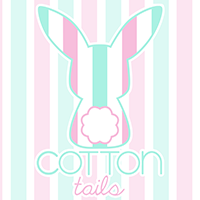

hi, hello,
I'm Candy. I studied design at UC Davis and took classes ranging from graphic, web, and video, to fashion, textiles, and photography. One thing to know about me is that I love to create, whether it is working hands on and crafting, or digitally.
If you are interested in working together, let's talk!~
- 
Fall 2015
Cottontails is a logo and branding project that revolved around redesigning and creating a new identity for a chosen food product. Given that cotton candy was not normally packaged or not packaged well, it was chosen to be explored more in depth to create a packaging and identity that better represents the characteristics of cotton candy.
the logo
This logo was created around the idea that the tail of a rabbit is as soft as cotton candy. It both represents the product and appeals to the targeted audience. With the light colors, and the soft curved lines, it reflects adolescence and reaches out to a younger audience.
the graphic standard
guidelines for uses of the logo and business identity
the process manual
the final product
Inspired by petals of a flower, the cotton candy is surrounded by many panels that wrap around the natural shape of the product, protecting the softness. To open, the panels are peeled at the top and can be flipped over to create a handle as if it were freshly made at a special event.
Summer 2014
the salvation army summer day camp
Over the summer in 2014, I worked in a day camp at the Salvation Army. The theme for the year was Game On!, so class lesson plans incorporated video games. I had the opportunity to design and create the yearbook as well as decorate some classrooms inspired by the theme.
the yearbook

the classroom decor
Unfortunately, I only have photos of one room, but other decor can be found in the background of some yearbook photos.
Summer 2015
the salvation army summer day camp
I worked at the same day camp the following year and had the same opportunity to create the yearbook and also class t-shirts. The theme for that year was Light of the World, so every design was centered around a light source in a dark background.
the yearbook
the t-shirt
Winter 2017
Connected was a project where we had to create a wearable product that incorporates technology to serve a purpose. Not ony did we have to create a prototype of the product, but we also had to create a logo and brand identity for it as well as give more information about the product such as the price range that it would be sold at.
the product
Like the name implies, this is a set of bracelets that light up when they touch. Each bracelet has a set of led lights inside with incomplete circuits. When they touch, it completes the circuit and lights up. this creates a sense of a connection.
the brand identity
This logo was created using similar colors to the product as well as the same heartbeat symbol shown on each bracelet.
 comes in a variety of colors
comes in a variety of colors
target audience
- ~couples
- ~family
- ~friends
- ~groups
price range
- ~$10-30
the promotional video
Winter 2016
the O'Mulligans - Sweet Barista Girl (lyric video)
Winter 2016
While studying at UC Davis, i realized that there wasn’t specified place to find all student events on campus, so this inspired me to create this project. myEvents is an app that is used as a form of communication between clubs/organizations and students. It is used for organizations and clubs to post their future events and for students to find events that may interest them on campus.
the process
Project Summary:
Create an app to allow easy accessibility to information about campus events.
Target Audience:
- -clubs and organizations
- -UC Davis students
Communication Strategy:
Provide charts, calendars, and other visuals to organize information.
visual inspiration

initial sketches
final mock-ups